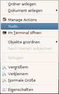

Nautilus-Actions
Dieser Artikel wurde für die folgenden Ubuntu-Versionen getestet:
Ubuntu 14.04 Trusty Tahr
Zum Verständnis dieses Artikels sind folgende Seiten hilfreich:
Nautilus-Actions  ist ein grafisches Verwaltungs- und Bearbeitungswerkzeug für Erweiterungen, mit denen sich der Dateimanager Nautilus um fehlende Funktionen ergänzen lässt. Ausgeführt werden diese Aktionen über das Kontextmenü. Beispiele für solche Aktionen sind ein "Senden an"-Kontextmenüeintrag, um schnell und einfach eine Datei per E-Mail zu verschicken, oder einfach nur das Öffnen von einem Terminal im aktuellen Ordner. Mehr Beispiele sind in den Artikeln Nautilus und Nautilus/Skripte aufgelistet.
ist ein grafisches Verwaltungs- und Bearbeitungswerkzeug für Erweiterungen, mit denen sich der Dateimanager Nautilus um fehlende Funktionen ergänzen lässt. Ausgeführt werden diese Aktionen über das Kontextmenü. Beispiele für solche Aktionen sind ein "Senden an"-Kontextmenüeintrag, um schnell und einfach eine Datei per E-Mail zu verschicken, oder einfach nur das Öffnen von einem Terminal im aktuellen Ordner. Mehr Beispiele sind in den Artikeln Nautilus und Nautilus/Skripte aufgelistet.
Installation¶
Folgendes Paket muss installiert werden [1]:
nautilus-actions (universe)
 mit apturl
mit apturl
Paketliste zum Kopieren:
sudo apt-get install nautilus-actions
sudo aptitude install nautilus-actions
Verwendung¶
Um nun das Kontextmenü um weitere Einträge mittels Nautilus-Actions zu ergänzen, startet man das Programm via:
Ab Ubuntu 12.04 mit Unity über "Einstellungen für Nautilus-Aktionen"
Bei Ubuntu-Varianten mit einem Anwendungsmenü ist ein Eintrag unter "System -> Einstellungen für Nautilus-Aktionen" zu finden
Auf der Kommandozeile kann man es mittels:
nautilus-actions-config-tool
starten.
 Das folgende kleine Beispiel soll die Funktionsweise verdeutlichen. Zuerst legt man eine neue Aktion an. Dann füllt man die entsprechenden Felder aus:
Reiter "Aktion":
Kontextbezeichner: "Terminal hier öffnen..."
Reiter "Befehl":
Pfad:
/usr/bin/gnome-terminalParameter:
--working-directory=%d/%b
Die restlichen Einstellung können so bleiben, wie sie vorgegeben sind.
Um die Änderungen wirksam werden zu lassen, startet man Nautilus neu. Alternativ kann man sich ab- und wieder neu anmelden. Nun sollte die neu angelegte Aktion im Kontextmenü  von Nautilus verfügbar sein.
von Nautilus verfügbar sein.
Hinweis:
Für dieses kleine Beispiel existiert auch das Paket nautilus-open-terminal.
Weitere Aktionen¶
Um zusätzliche Nautilus-Aktionen zu installieren, kann ein "Personal Packages Archiv" (PPA) [2] genutzt werden.
Adresszeile zum Hinzufügen des PPAs:
ppa:nae-team/ppa
Hinweis!
Zusätzliche Fremdquellen können das System gefährden.
Ein PPA unterstützt nicht zwangsläufig alle Ubuntu-Versionen. Weitere Informationen sind der  PPA-Beschreibung des Eigentümers/Teams nae-team zu entnehmen.
PPA-Beschreibung des Eigentümers/Teams nae-team zu entnehmen.
Damit Pakete aus dem PPA genutzt werden können, müssen die Paketquellen neu eingelesen werden.
Nach dem Aktualisieren der Paketquellen kann das folgende Paket installiert werden:
nautilus-actions-extra (ppa)
mit apturl
Paketliste zum Kopieren:
sudo apt-get install nautilus-actions-extra
sudo aptitude install nautilus-actions-extra
Dabei handelt es sich um ein Metapaket, das Nautilus-Aktionen für die verschiedensten Anwendungszwecke enthält. Auf Wunsch können diese auch einzeln installiert werden, der Paketname lautet immer nautilus-...
Darüber hinaus stehen weitere Möglichkeiten zur Verfügung:
My Nautilus Scripts
- diverse weitere Skripte
 (via
(via Lädt man eine Nautilus-Aktion manuell herunter, öffnet man Nautilus-Actions und importiert die gerade heruntergeladene Datei. Danach startet man Nautilus wie oben beschrieben neu.
Links¶
DES-EMA
- Aufbau und Möglichkeiten von Nautilus-Aktionen
Nautilus Actions Extra: A Pack Of Useful Scripts For Nautilus 3
- Blogbeitrag, 12/2011
- Erstellt mit Inyoka
-
 2004 – 2017 ubuntuusers.de • Einige Rechte vorbehalten
2004 – 2017 ubuntuusers.de • Einige Rechte vorbehalten
Lizenz • Kontakt • Datenschutz • Impressum • Serverstatus -
Serverhousing gespendet von